Club Cardio Ouest
Club Cardio OuestIntelligence Artificielle.
L'IA révolutionne la cardiologie, offrant de nouveaux outils pour la prévention, le diagnostic et le traitement des maladies cardiaques
Fibrillation Auriculaire
Trouble du rythme cardiaque courant qui peut entraîner des complications graves, mais qui peut être traité efficacement
Insuffisance Cardiaque
Le cœur ne pompe plus suffisamment de sang pour répondre aux besoins de l'organisme.
La coronaropathie
Un rétrécissement des artères coronaires qui peut entraîner une crise cardiaque ou un décès.
À propos
Plus d'infos sur le Congrés
22ème congrès international du Club des cardiologues de l'ouest, 1 et 2 Octobre 2026 à AZ HOTELS Grand Oran, Oran, Algérie.
La cardiologie au centre de la santé publique.
Notre congrès rassemble des experts pour discuter des défis et des opportunités cruciales dans ce domaine vital de la médecine, en plaçant la santé cardiaque au cœur de la santé publique.
-
Jeudi 1 Octobre 2026
La première journée promet une expérience enrichissante, avec un accueil chaleureux suivi de trois sessions de conférences captivantes. Vous aurez l'occasion de faire une pause café, de visiter les stands innovants, de participer à un symposium informatif, et de clôturer la journée en beauté avec un Dîner Gala inoubliable.
-
Vendredi 2 Octobre 2026
La deuxième journée du congrès est chargée de connaissances, avec six sessions de conférences passionnantes. Prenez une pause café et explorez les stands, assistez à trois symposiums informatifs, savourez un déjeuner convivial, et assistez à la clôture de cet événement enrichissant
Conférences
Symposiums
Modérateurs
Intervenants
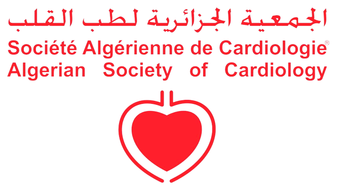
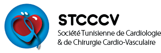
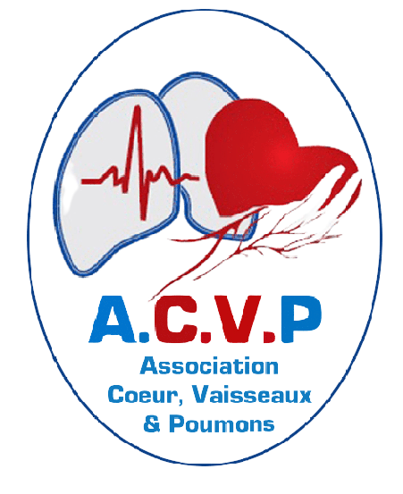
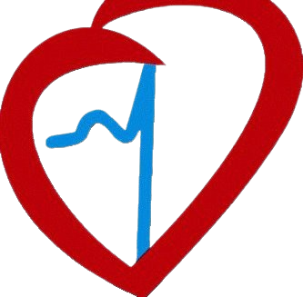
Programme
Programme détaillé du Congrès
Ce programme n'est pas le programme définitif du congrès, il sera modifié au fur et à mesure
Le congrès dure 2 jours : jeudi 1er octobre et vendredi 2 octobre 2026. Il se tiendra à l'AZ HOTELS Grand Oran, Oran, Algérie.
Programme en cours de préparation
Le détail des sessions de la première journée (jeudi 1er octobre 2026) sera publié prochainement.
Programme en cours de préparation
Le détail des sessions de la deuxième journée (vendredi 2 octobre 2026) sera publié prochainement.
Le programme détaillé de la 22ème édition sera mis en ligne ici dès qu'il sera disponible.
Équipe
Notre équipe Club Cardio Ouest
Aperçu des membres de notre association Club des Cardiologues de l'Ouest.
DR ABBOU DJAMELEDDINE
Secrétaire généralDR KARA NEBIA
Vice présidenteDR MOHAMMEDI BACHIR
Président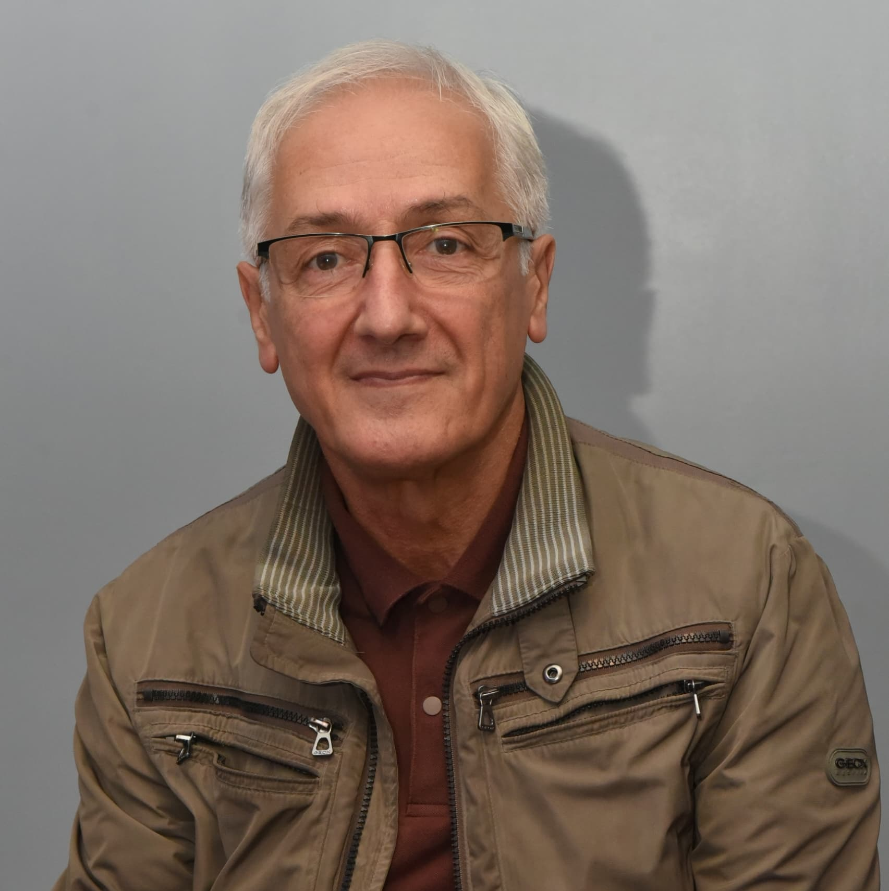
DR NASRI DJAMEL EDDINE
TrésorierHommage
Pr KARA Mostefa Said
Un grand monsieur de la cardiologie nous a quitté ...
un homme remarquable, dynamique, souriant, et toujours dévoué aux événements scientifiques. Depuis ses débuts au CHU d'Oran, et même après son départ vers sa clinique privée, il n'a jamais cessé de travailler pour le bien de ses patients, en particulier dans l'ouest algérien.
Le Pr Kara nous a quittés bien trop tôt, laissant un vide immense dans le domaine de la santé, et plus particulièrement au sein de la communauté de la cardiologie algérienne. Son sourire et son optimisme vont nous manquer à tous.
On demande à tous ceux qui l'ont connu d'avoir une pieuse pensée en sa mémoire.
Que Dieu ait son âme, cher maître.
ربي يرحمه ويغفر له و يسكنه فسيح جناته
Frais
Les frais d'inscription du Congrès
L'inscription pour notre congrès de 2 jours est à 3 000 DA pour les médecins praticiens, et gratuite pour les médecins résidents. Elle comprend tous les frais.
Note : vos conjoints et vos invités ne sont pas inclus dans la prise en charge.
{kind=link}
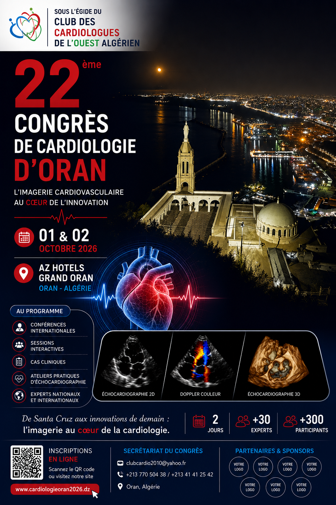
Cliquez sur l'affiche pour l'agrandir
Médecin praticien
3.000 DA
- 9 Conférences
- 5 Symposiums
- Deux pauses café
- Déjeuners
- Dîners de gala
- Cérémonie de clôture
Médecin résident
Gratuit · 0 DA
- 9 Conférences
- 5 Symposiums
- Deux pauses café
- Cérémonie de clôture
SPONSORS
Les sponsors de notre Congrès
Nous tenons à remercier chaleureusement nos sponsors. Nous sommes reconnaissants de leur confiance et de leur engagement.
- All
- Platinum
- Golden
- Silver
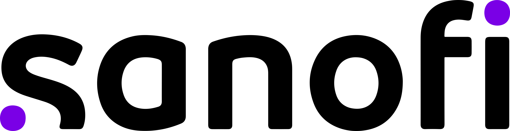
Sanofi
Platinum sponsor
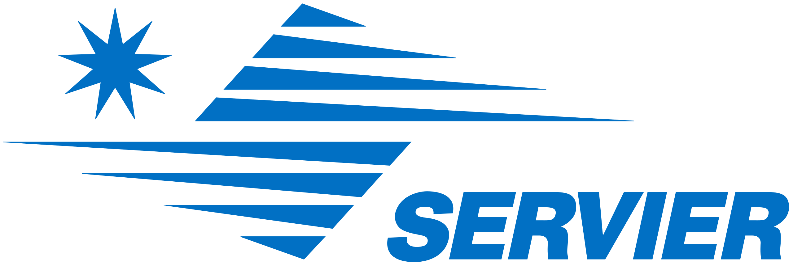
Servier
Golden sponsor
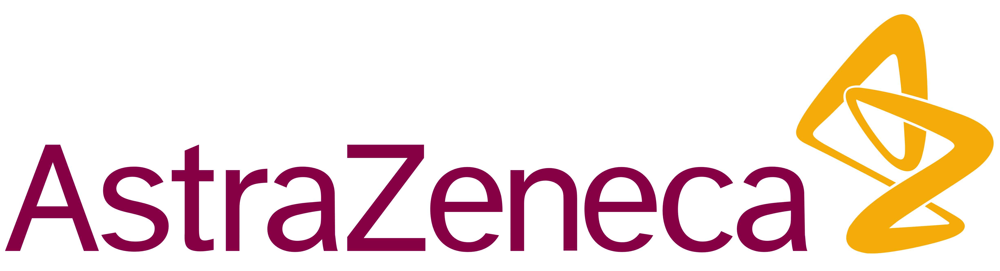
astrazeneca
hikma
Abdi Brahim
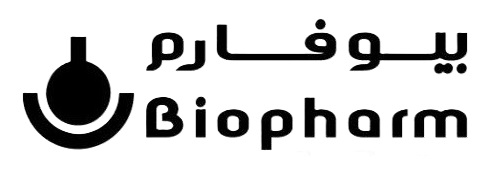
biopharm
boehringer
Organon
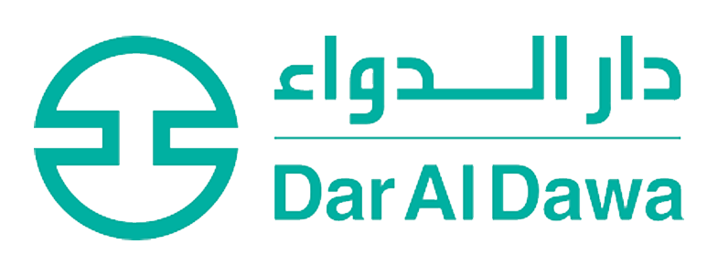
Dar Dawa
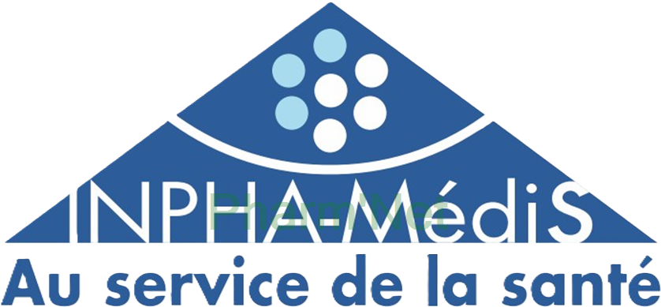
Inpha-medis
SODIMMED
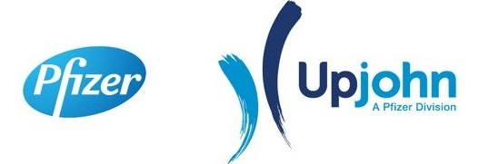
PFIZER
Général électrique
Canon
IMC
VICRALYS
OMNIPAQUE
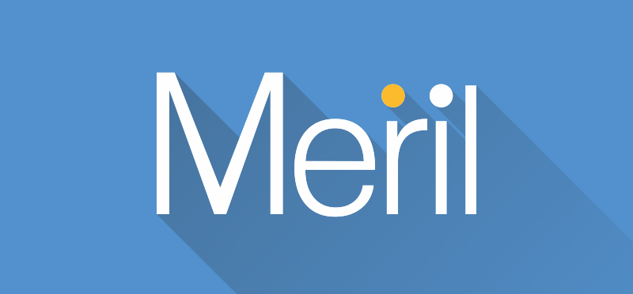
MERIL
DM-CM
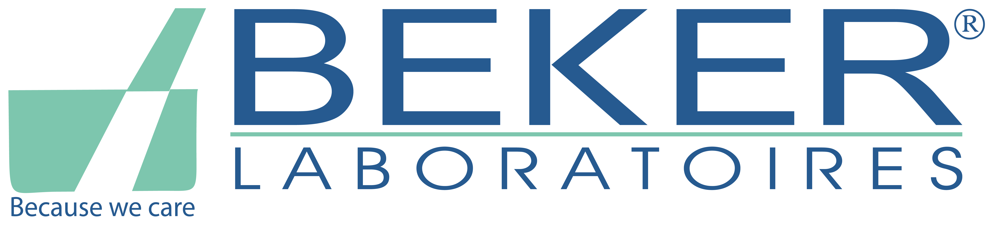
beker
F.A.Q
Questions posées fréquemment
Découvrez des réponses aux questions courantes sur les maladies cardiaques et notre congrès international.
-
Comment puis-je m'inscrire au prochain congrès international de cardiologie ?
L'inscription au congrès se fait généralement en ligne sur le site officiel de l'événement. Suivez les instructions d'inscription fournies et assurez-vous de respecter les dates limites.
-
Quels sont les thèmes abordés lors d'un congrès international de cardiologie ?
Les congrès couvrent un large éventail de sujets, notamment les dernières avancées en recherche cardiaque, les nouvelles technologies médicales, les pratiques cliniques innovantes et les discussions sur les défis actuels en cardiologie.
-
Existe-t-il des ressources éducatives en ligne sur les maladies cardiaques ?
Oui, de nombreuses organisations médicales et institutions proposent des ressources éducatives en ligne gratuites. Vous pouvez consulter des sites Web fiables pour trouver des articles, des vidéos et des informations sur les maladies cardiaques.
-
Quels sont les principaux facteurs de risque pour les maladies cardiaques ?
Les principaux facteurs de risque pour les maladies cardiaques incluent l'hypertension artérielle, le tabagisme, le diabète, une alimentation malsaine, la sédentarité et les antécédents familiaux de maladies cardiaques.
-
Comment puis-je prendre soin de ma santé cardiaque au quotidien ?
Pour maintenir une bonne santé cardiaque, adoptez un mode de vie sain en faisant de l'exercice régulièrement, en mangeant équilibré, en évitant le tabac, en contrôlant votre tension artérielle et en gérant le stress.
-
Quelles sont les avancées récentes en cardiologie ?
Les avancées récentes incluent l'utilisation de la thérapie génique, les traitements innovants pour l'insuffisance cardiaque et les technologies de surveillance à distance pour les patients cardiaques.
Contact
Contactez-nous
Nous sommes à votre disposition pour répondre à toutes vos questions, N'hésitez pas à nous contacter pour en savoir plus.
Notre adresse
4,Rue Mirauchaux (Place des Victoire) - Oran, Algérie
Envoyez-nous un email
abboudjamel22@gmail.com
Appelez-nous
+213 770 504 382